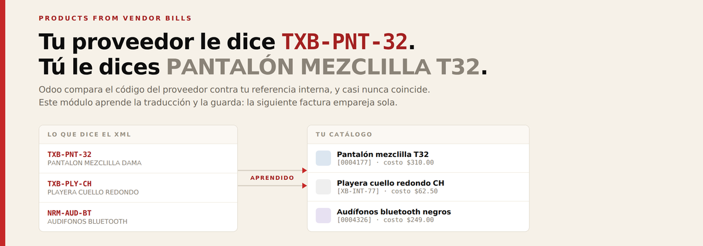
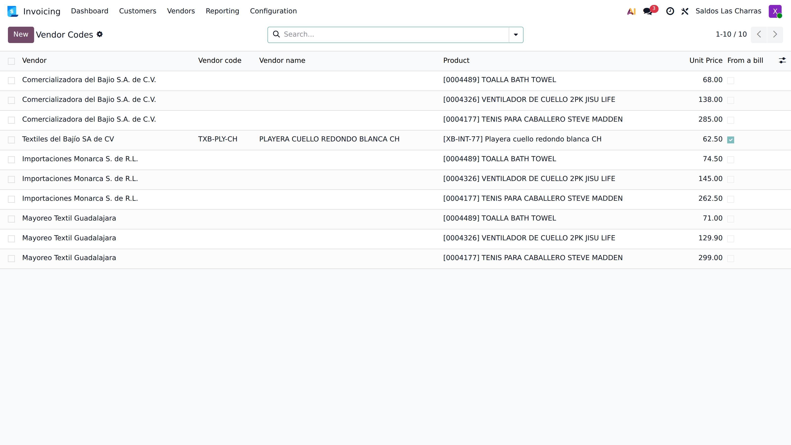
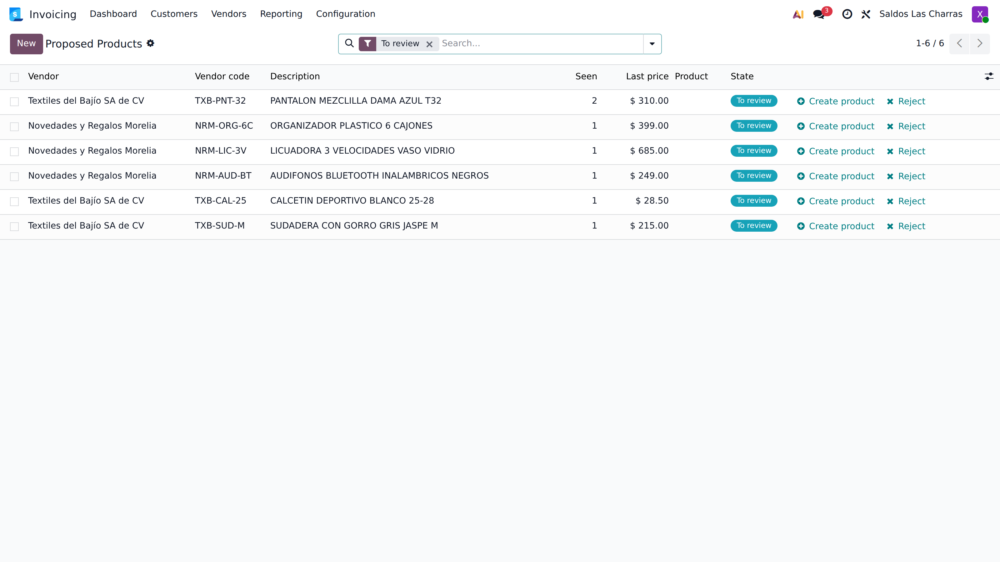
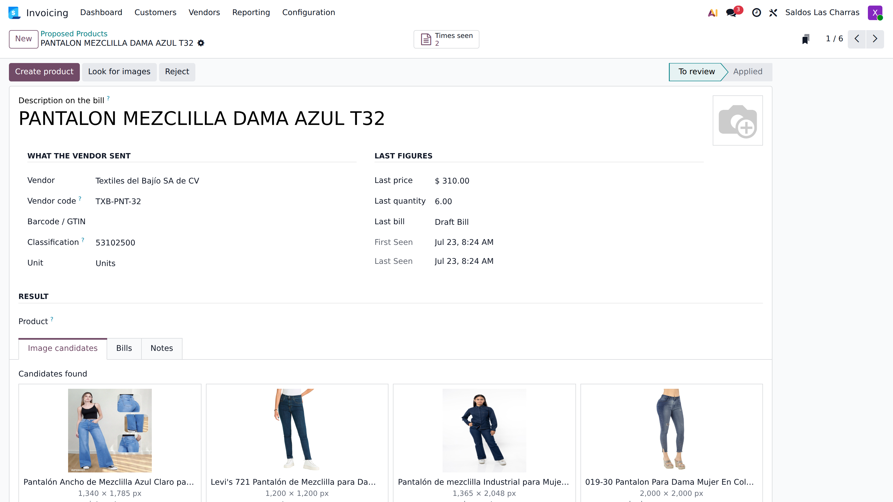
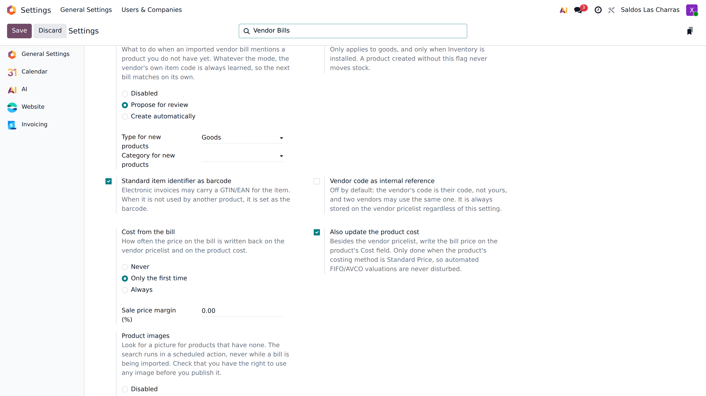

Odoo reads the vendor’s electronic invoice and fills the lines. This module deals with the products: it matches them by the code that vendor uses, proposes the ones you do not have, keeps the cost up to date — and even looks for a picture.
An item on the XML that is not already in your catalogue leaves the bill line as bare text: no product, no stock, no cost, no traceability. And nothing is remembered, so the same bill next month fails to match again. Odoo compares the vendor’s item code against your internal reference, which almost never matches.
The translation between the reference a vendor prints on their invoice and the product in your catalogue lives on the vendor pricelist. This module looks there first — and writes back every match you confirm, so the next bill from that vendor matches on its own. The catalogue teaches itself.

The row learned from a bill carries the vendor’s code and is flagged «From a bill».
Everything the bill mentions and you do not have lands in a review screen, with the vendor, their code, the price, how many times it has been seen and on which bills. Create it, link it to a product you already have, or reject it. Repeated items are grouped into a single proposal with a counter.

Creating or linking the product back-fills the draft bills where the item appeared — without touching the quantities, prices, discounts or taxes that were imported.

A catalogue built from bills has no pictures. The module can look for one and show you the candidates side by side.
| Unknown products | Disabled · Propose for review (default) · Create automatically |
| Cost from the bill | Never · Only the first time (default) · Always |
| Product images | Disabled · Propose candidates · Attach the best match |
The vendor pricelist price stays in the bill’s own currency. The product cost is converted to the company currency and is only written when the costing method is Standard Price, so automated FIFO/AVCO valuations are never disturbed. A margin can derive a sale price from the cost.

Two search back ends are included: DuckDuckGo, which needs no credentials at all, and Google Programmable Search if you already have a key. The search runs in a scheduled action, never during the import, so importing a bill is never slowed down or made to depend on the internet.
You are responsible for making sure you have the right to use any image you attach. The module helps you find candidates — review them.
xb_vendor_bill_products_mx, which installs itself when Odoo’s
Mexican localisation is present. It also fills in the line description, which the
Mexican decoder leaves empty.Accounting ▸ Configuration ▸ Settings ▸ Products from Vendor Bills. Everything is per company. Two menus are added under Accounting ▸ Vendors: Proposed Products and Vendor Codes.
Odoo 19.0 — Community and Enterprise.
Support: soporte@xubax.com · www.xubax.com